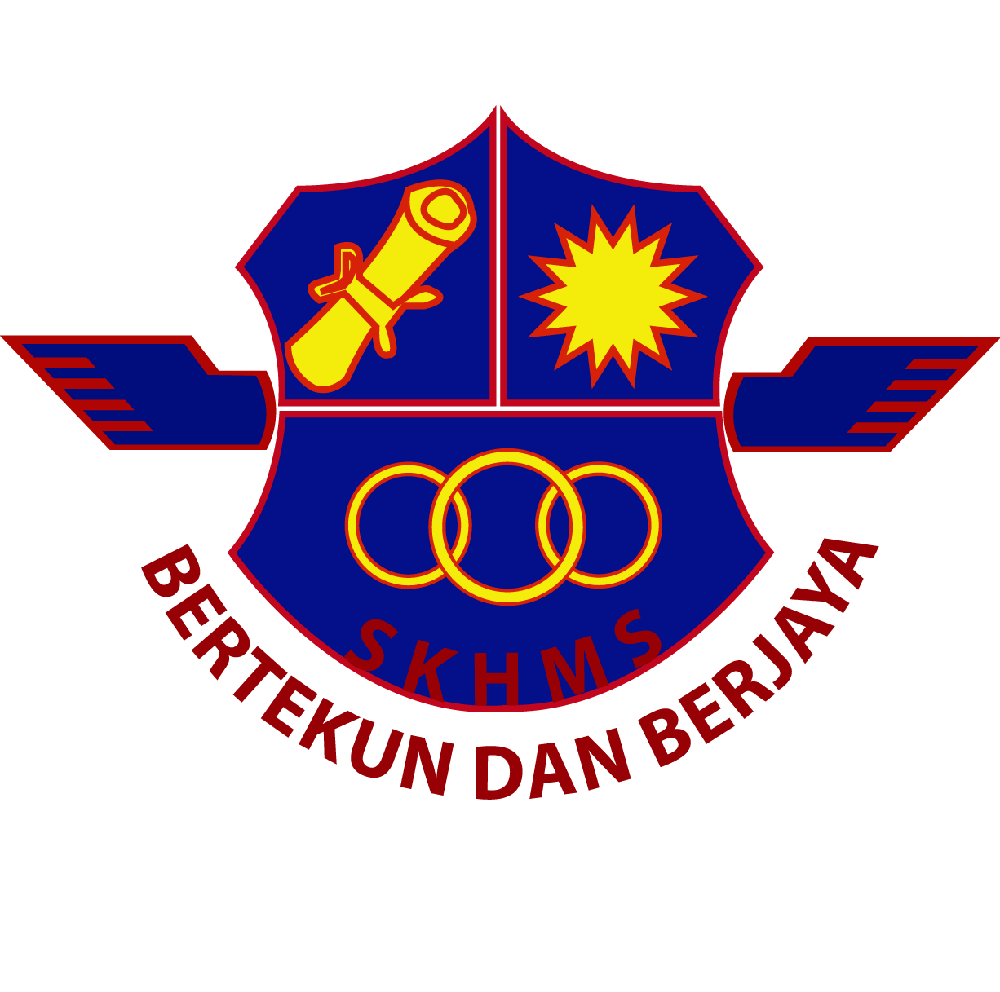
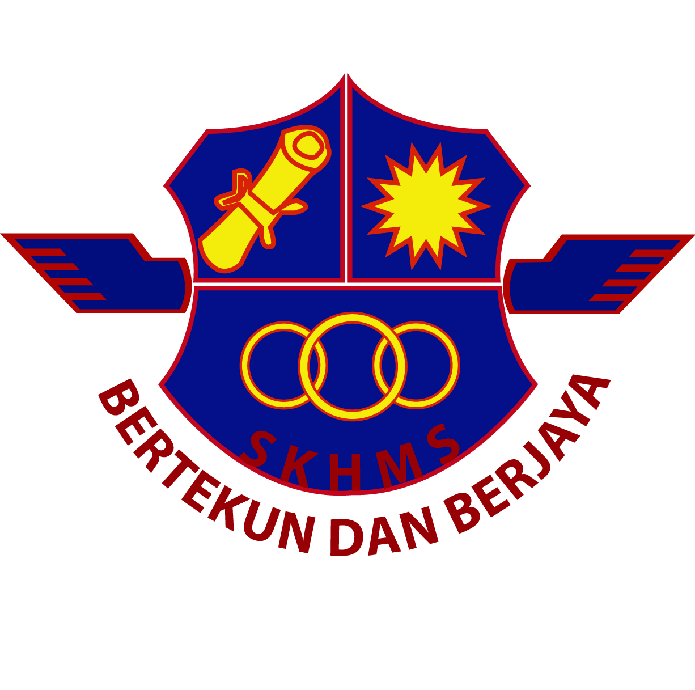

Primary School

Sekolah Rendah Kebangsaan Haji Mohd Shariff started as Sekolah Inggeris Alor Setar. On 6 January 1968, the building was located in
Former Daily Training Center (DTC) within the area Kolej Sultan Abdul Hamid, Alor Setar.
Secondary School
On January 1, 1977, a secondary school was established in the area of the educational complex, named SMK Syed Mohamed Al-Bukhary.
University
UiTM Kedah was inaugurated on 1 October 1997 by YB Tun Daim Zainuddin, Minister of Finance. It began its first operation in November 1997 with 162 students and 25 administrative staff.
Some Pictures From Primary School - University


Primary School
Sekolah Rendah Kebangsaan Haji Mohd Shariff started as Sekolah Inggeris Alor Setar. On 6 January 1968, the building was located in Former Daily Training Center (DTC) within the area Kolej Sultan Abdul Hamid, Alor Setar.
Secondary School
On January 1, 1977, a secondary school was established in the area of the educational complex, named SMK Syed Mohamed Al-Bukhary.
University
UiTM Kedah was inaugurated on 1 October 1997 by YB Tun Daim Zainuddin, Minister of Finance. It began its first operation in November 1997 with 162 students and 25 administrative staff.
Some Pictures From Primary School - University